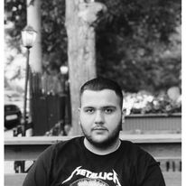

Une jam Fatlumi, kam lindur para 20 viteve ne Kumanove dhe vazhdoj te jetoj ne Kumanove, Republika e Maqedonise se Veriut.
Mesimet e para i kam marre ne vendlindje prane SH.F."Naim Frasheri",
kurse shkollimin e mesem ne Shkup prane SHMMQSH "Pance Karagjozov" ne drejtimin teknik dhembesh.Kam vijuar studimet per stomatologji ne "Fakultetin e Stomatologjise" ne Shkup, te cilat per momentin jane ne gjendje pauze, gjegjesisht kam mbrauar vetem vitin e pare ne kete dege.
Kam provuar ta kalis veten edhe me pune, ndoshta per ta dite vleren e nje profesioni te caktuar, por edhe te shijoj ndjenjen e pavaresise financiare dhe asaj per te qene ne interaksion me njerez te ndryshem cdo dite. Ne mesin e ketyre profesioneve ka laramani shume pasiqe kam punuar kamarier, DJ, housekeeper ne vendlindje dhe poashtu ne perendim. Dhe per momentin jam fokusuar vetem ne veten dhe ne arritjet ne rrafshin e aftesimit profesional.
Nuk eshte se kam ndonje aftesi te vecante per te cekur, pervec gjuhes angleze dhe asaj gjermane ne nivel ekstrem fillestar si dhe kam aftesi te "perkthej" fjalet mbrapsht. Si hobi, cuditerisht, e kam te gjej mesin aritmetik te numrave ne targat e automjeteve.
Thenia qe me eshte ngulitur me se shumti ne mend, dhe njekohesisht nuk e di se kush eshte autor, eshte: Mos heq dore nga synimet e medha, per shkak te synimeve te vogla te perkohshme. (Don't quit on your big goals, because of small temporarily goals)